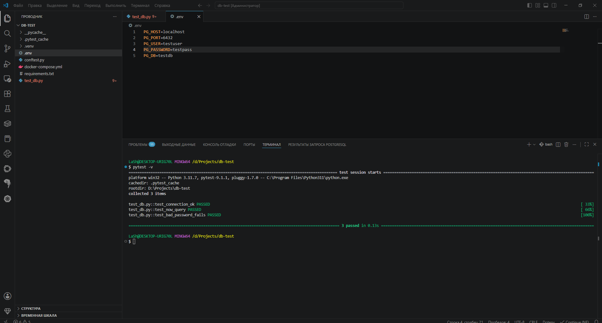
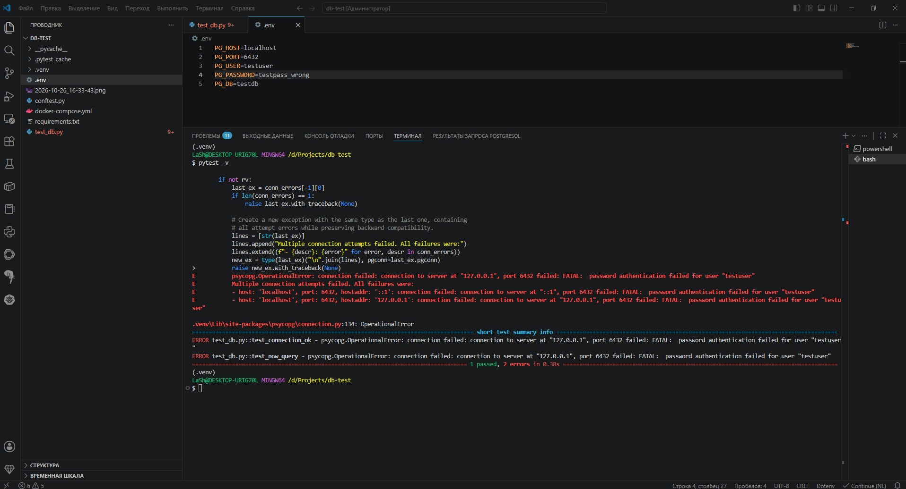
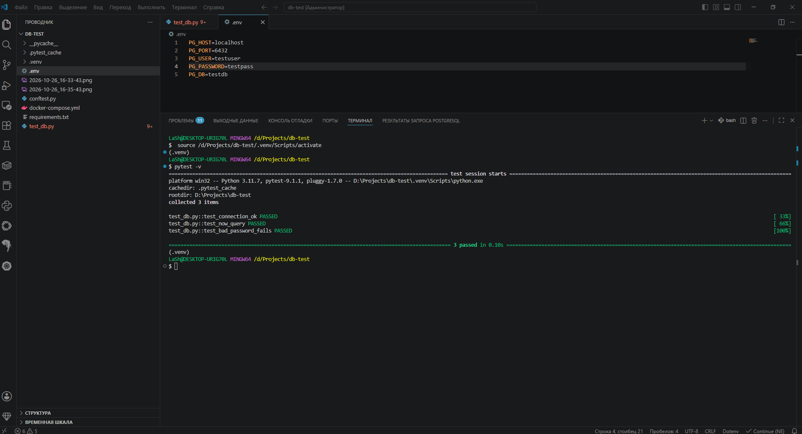

СУБД (Система Управления Базами Данных) — это комплекс программного обеспечения для создания, хранения, обработки и управления данными. Она обеспечивает надежность, безопасность и многопользовательский доступ.
Использование Excel или простых файлов не подходит для серьезных систем по следующим причинам:
Реляционные: PostgreSQL, MySQL, Oracle Database, Microsoft SQL Server, SQLite.
Документные (NoSQL): MongoDB.
Ключ-значение (Key-Value): Redis, Memcached.
Колоночные: ClickHouse, Vertica.
Классифицировать их можно по модели данных (реляционные, документные, графовые), по архитектуре (клиент-серверные и встраиваемые), по типу лицензии (коммерческие, open-source).
Это логическая модель данных, основанная на математической теории отношений (реляционной алгебре). Данные представлены в виде таблиц (отношений), состоящих из строк (кортежей) и столбцов (атрибутов). Связи между таблицами реализуются через ключи (первичные и внешние).
Типы связей: Один к одному (1:1), Один ко многим (1:N), Многие ко многим (N:M).
Связь «Многие ко многим» реализуется через промежуточную (связующую) таблицу, которая содержит внешние ключи к обеим связываемым таблицам. Часто в такой таблице создается составной первичный ключ из этих двух полей.
Нормализация — это процесс организации данных в таблицах с целью минимизации избыточности и предотвращения аномалий при вставке, обновлении и удалении данных. Основные нормальные формы:
Денормализация (намеренное добавление избыточности) оправдана в следующих случаях:
WHERE фильтрует строки до группировки данных. HAVING фильтрует сгруппированные данные после применения агрегатных функций (SUM, COUNT и т.д.). В одном запросе могут использоваться оба оператора.
INNER JOIN — возвращает только совпадающие строки в обеих таблицах.LEFT JOIN (или LEFT OUTER JOIN) — все строки из левой таблицы + совпадения из правой (если нет — NULL).RIGHT JOIN — все строки из правой таблицы + совпадения из левой.FULL JOIN — все строки из обеих таблиц.CROSS JOIN — декартово произведение (все возможные комбинации строк).| Команда | Что делает | WHERE | Транзакции | Триггеры |
|---|---|---|---|---|
DELETE |
Удаляет строки (можно выборочно) | Да | Можно откатить (DML) | Срабатывают |
TRUNCATE |
Быстро очищает всю таблицу | Нет | В некоторых СУБД нельзя откатить (DDL) | Не срабатывают |
DROP |
Удаляет таблицу целиком (структуру и данные) | Нет | Нельзя откатить (DDL) | Не срабатывают |
NULL — это специальное значение, обозначающее отсутствие данных (неизвестность). Это не ноль и не пустая строка.
Особенности работы:
NULL = NULL дает NULL (не TRUE). Для проверки используют IS NULL или IS NOT NULL.COUNT(*) считает все строки.COALESCE(), IFNULL(), NVL().Индекс — это структура данных (обычно B-tree), которая ускоряет поиск и сортировку строк по определенному столбцу, работая по принципу оглавления в книге.
Минусы:
Транзакция — это последовательность операций с базой данных, которая выполняется как единое целое. Она должна обладать свойствами ACID:
Управление осуществляется командами BEGIN, COMMIT, ROLLBACK.
Схема БД:
clients (client_id PK, full_name, city, registered_at DATE)
accounts (account_id PK, client_id FK, currency, opened_at DATE, closed_at DATE NULL)
transactions (tx_id PK, account_id FK, tx_date TIMESTAMP, amount NUMERIC, tx_type) -- tx_type: 'in' / 'out'SELECT client_id, full_name, city, registered_at
FROM clients
WHERE city = 'Новосибирск'
AND registered_at >= DATE '2025-01-01'
AND registered_at < DATE '2026-01-01'
ORDER BY registered_at;SELECT currency, COUNT(*) AS open_accounts
FROM accounts
WHERE closed_at IS NULL
GROUP BY currency
ORDER BY currency;SELECT c.client_id, c.full_name, COALESCE(SUM(t.amount), 0) AS total_in
FROM clients c
JOIN accounts a ON a.client_id = c.client_id
LEFT JOIN transactions t ON t.account_id = a.account_id AND t.tx_type = 'in'
GROUP BY c.client_id, c.full_name
ORDER BY total_in DESC;SELECT c.*
FROM clients c
LEFT JOIN accounts a ON a.client_id = c.client_id
WHERE a.account_id IS NULL;SELECT c.client_id, c.full_name, COUNT(a.account_id) AS accounts_cnt
FROM clients c
JOIN accounts a ON a.client_id = c.client_id
GROUP BY c.client_id, c.full_name
HAVING COUNT(a.account_id) > 2;SELECT account_id, tx_date, amount, COUNT(*) AS dup_cnt
FROM transactions
GROUP BY account_id, tx_date, amount
HAVING COUNT(*) > 1
ORDER BY dup_cnt DESC;WITH monthly AS (
SELECT c.client_id, c.full_name, DATE_TRUNC('month', t.tx_date) AS month, SUM(t.amount) AS out_sum
FROM clients c
JOIN accounts a ON a.client_id = c.client_id
JOIN transactions t ON t.account_id = a.account_id
WHERE t.tx_type = 'out'
GROUP BY c.client_id, c.full_name, DATE_TRUNC('month', t.tx_date)
),
ranked AS (
SELECT *, ROW_NUMBER() OVER (PARTITION BY month ORDER BY out_sum DESC) AS rn
FROM monthly
)
SELECT month, client_id, full_name, out_sum
FROM ranked
WHERE rn <= 3
ORDER BY month, out_sum DESC;СУБД: PostgreSQL 16 (развернута в Docker).
Стек: Python 3.11, pytest, psycopg 3, python-dotenv.
db-test/
├── docker-compose.yml
├── requirements.txt
├── .env
├── conftest.py
└── test_db.pyДля тестирования развернут контейнер PostgreSQL. В файле .env хранятся параметры подключения (порт 6432, так как 5432 занят локальной БД).
# docker-compose.yml
services:
db:
image: postgres:16
container_name: pg_test
environment:
POSTGRES_USER: testuser
POSTGRES_PASSWORD: testpass
POSTGRES_DB: testdb
ports:
- "6432:5432"Фикстура для подключения к БД с явным указанием пути к .env и флагом override=True (чтобы избежать конфликтов с переменными окружения Windows).
import os
from pathlib import Path
import pytest
import psycopg
from dotenv import load_dotenv
load_dotenv(dotenv_path=Path(__file__).parent / ".env", override=True)
def get_conn_params():
return dict(
host=os.getenv("PG_HOST", "localhost"),
port=int(os.getenv("PG_PORT", "6432")),
user=os.getenv("PG_USER", "testuser"),
password=os.getenv("PG_PASSWORD", "testpass"),
dbname=os.getenv("PG_DB", "testdb"),
connect_timeout=5,
)
@pytest.fixture(scope="session")
def db_conn():
with psycopg.connect(**get_conn_params()) as conn:
yield connimport psycopg
import pytest
from conftest import get_conn_params
def test_connection_ok(db_conn):
"""Подключение установлено, SELECT 1 возвращает результат."""
with db_conn.cursor() as cur:
cur.execute("SELECT 1")
row = cur.fetchone()
assert row is not None
assert row[0] == 1
def test_now_query(db_conn):
"""Простейший запрос из ТЗ: select now()."""
with db_conn.cursor() as cur:
cur.execute("SELECT now()")
row = cur.fetchone()
assert row is not None
assert row[0] is not None
def test_bad_password_fails():
"""Негативный кейс: с неверным паролем подключение падает."""
bad = get_conn_params()
bad["password"] = "wrong_password"
with pytest.raises(psycopg.OperationalError):
with psycopg.connect(**bad):
passНиже представлены скриншоты, демонстрирующие работоспособность тестового окружения.
Все три теста пройдены. Подключение к БД на порту 6432 успешно установлено, запросы выполняются корректно.

Для проверки того, что тесты чувствительны к параметрам подключения, в файле .env был временно изменен пароль на неверный (PG_PASSWORD=testpass_wrong). Тесты подключения упали с ошибкой psycopg.OperationalError.

После исправления пароля обратно на testpass и повторного запуска, все тесты снова проходят успешно.

Конец документа.